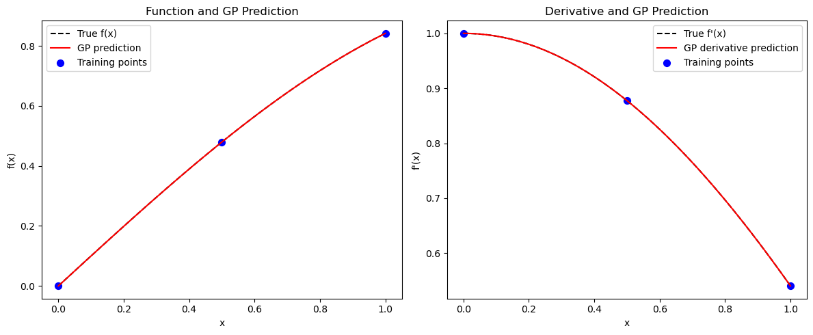
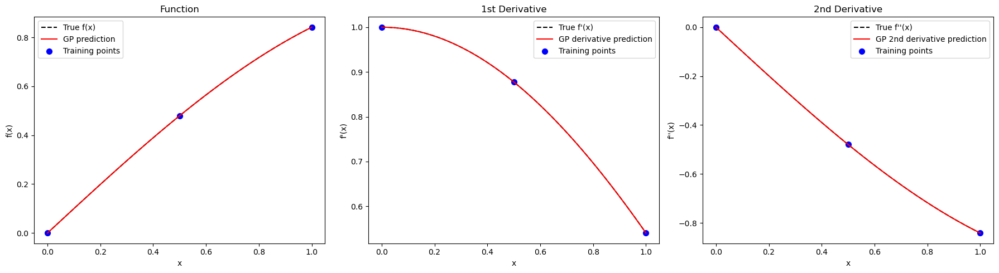
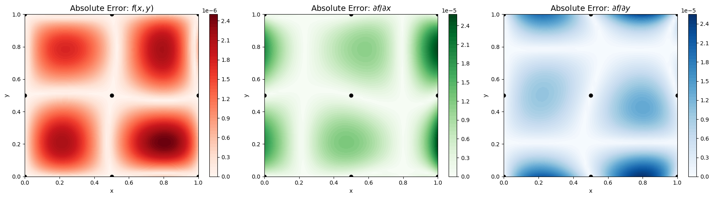
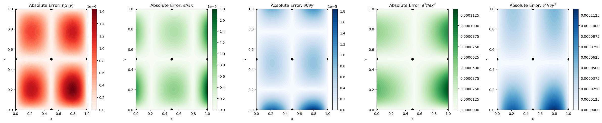
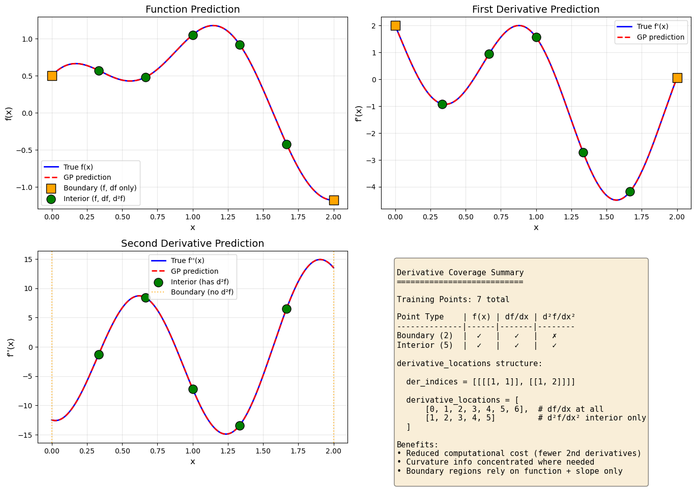

Derivative-Enhanced Gaussian Process (DEGP)#
Overview#
The Derivative-Enhanced Gaussian Process (DEGP) extends standard Gaussian Process (GP) regression by incorporating derivative information at training points. This enables the model to:
Capture local nonlinear behavior more accurately
Improve predictions in regions where function samples are sparse
Refine uncertainty estimates and predictive gradients using higher-order information
This tutorial demonstrates DEGP on 1D and 2D functions, first using first-order derivatives only, and then including second-order derivatives for improved curvature representation.
The examples also illustrate how DEGP predictions can be validated at training points and visualized over a range of inputs.
—
Example 1: 1D First-Order Derivatives Only#
Overview#
Learn a 1D function \(f(x) = \sin(x)\) using both the function values and its first derivative \(f'(x) = \cos(x)\). Incorporating derivatives allows the GP to respect the slope of the function, leading to more accurate interpolation.
—
Step 1: Import required packages#
import numpy as np
from jetgp.full_degp.degp import degp
import matplotlib.pyplot as plt
print("Modules imported successfully.")
Modules imported successfully.
Explanation:
We import numpy for numerical operations, matplotlib.pyplot for visualization, and the DEGP class from the full_degp package.
—
Step 2: Define training data#
X_train = np.array([[0.0], [0.5], [1.0]])
y_func = np.sin(X_train)
y_deriv1 = np.cos(X_train)
y_train = [y_func, y_deriv1]
print("X_train:", X_train)
print("y_train:", y_train)
X_train: [[0. ]
[0.5]
[1. ]]
y_train: [array([[0. ],
[0.47942554],
[0.84147098]]), array([[1. ],
[0.87758256],
[0.54030231]])]
Explanation:
Here, we define three training points and compute their function values and first derivatives. y_train is a list containing both values and derivatives, which the DEGP model will use for training.
—
Step 3: Define derivative indices and locations#
der_indices = [[[[1, 1]]]]
# derivative_locations must be provided - one entry per derivative
derivative_locations = []
for i in range(len(der_indices)):
for j in range(len(der_indices[i])):
derivative_locations.append([k for k in range(len(X_train))])
print("der_indices:", der_indices)
print("derivative_locations:", derivative_locations)
der_indices: [[[[1, 1]]]]
derivative_locations: [[0, 1, 2]]
Explanation:
der_indices tells the DEGP model which derivatives to include. In 1D, the first order derivative is labeled as [[1,1]]. derivative_locations specifies which training points have each derivative—here, all points have the first derivative.
—
Step 4: Initialize DEGP model#
model = degp(X_train, y_train, n_order=1, n_bases=1,
der_indices=der_indices,
derivative_locations=derivative_locations,
normalize=True,
kernel="SE", kernel_type="anisotropic")
print("DEGP model initialized.")
DEGP model initialized.
Explanation:
- n_order=1 specifies first-order derivatives
- kernel="SE" uses a Squared Exponential kernel
- kernel_type="anisotropic" allows the model to learn separate length scales for each dimension
- normalize=True ensures that both function values and derivatives are scaled for numerical stability
—
Step 5: Optimize hyperparameters#
params = model.optimize_hyperparameters(
optimizer='pso',
pop_size = 100,
n_generations = 15,
local_opt_every = 15,
debug = False
)
print("Optimized hyperparameters:", params)
Stopping: maximum iterations reached --> 15
Optimized hyperparameters: [-0.79461808 0.74787037 -6.90795194]
Explanation: Hyperparameters of the kernel (length scale, variance, noise, etc.) are optimized by maximizing the marginal log likelihood. Particle Swarm Optimization (PSO) is used here for robustness.
—
Step 6: Validate predictions at training points#
y_train_pred = model.predict(X_train, params, calc_cov=False, return_deriv=True)
# Output shape is [n_derivatives + 1, n_points]
# Row 0: function values, Row 1: first derivative
y_func_pred = y_train_pred[0, :]
y_deriv_pred = y_train_pred[1, :]
abs_error_func = np.abs(y_func_pred.flatten() - y_func.flatten())
abs_error_deriv = np.abs(y_deriv_pred.flatten() - y_deriv1.flatten())
print("Absolute error (function) at training points:", abs_error_func)
print("Absolute error (derivative) at training points:", abs_error_deriv)
Note: derivs_to_predict is None. Predictions will include all derivatives used in training: [[[1, 1]]]
Absolute error (function) at training points: [2.08221773e-11 1.36352041e-12 1.31896716e-11]
Absolute error (derivative) at training points: [2.15107931e-11 8.35553848e-11 2.20210516e-11]
Explanation:
We first check predictions at training points to ensure that the DEGP model exactly interpolates function values and derivatives, as expected for noiseless training data. The output has shape [n_derivatives + 1, n_points] where row 0 contains function predictions and subsequent rows contain derivative predictions.
—
Step 7: Visualize predictions#
X_test = np.linspace(0, 1, 100).reshape(-1, 1)
y_test_pred = model.predict(X_test, params, calc_cov=False, return_deriv=True)
# Row 0: function, Row 1: first derivative
y_func_test = y_test_pred[0, :]
y_deriv_test = y_test_pred[1, :]
plt.figure(figsize=(12,5))
plt.subplot(1,2,1)
plt.plot(X_test, np.sin(X_test), 'k--', label='True f(x)')
plt.plot(X_test, y_func_test, 'r-', label='GP prediction')
plt.scatter(X_train, y_func, c='b', s=50, label='Training points')
plt.xlabel('x')
plt.ylabel('f(x)')
plt.title('Function and GP Prediction')
plt.legend()
plt.subplot(1,2,2)
plt.plot(X_test, np.cos(X_test), 'k--', label="True f'(x)")
plt.plot(X_test, y_deriv_test, 'r-', label='GP derivative prediction')
plt.scatter(X_train, y_deriv1, c='b', s=50, label='Training points')
plt.xlabel('x')
plt.ylabel("f'(x)")
plt.title('Derivative and GP Prediction')
plt.legend()
plt.tight_layout()
plt.show()
Note: derivs_to_predict is None. Predictions will include all derivatives used in training: [[[1, 1]]]

Explanation: The plots compare DEGP predictions with the true function and derivatives.
—
Summary#
This example demonstrates first-order DEGP on a 1D function. By incorporating derivative information at training points, the GP achieves:
Exact interpolation of both function values and slopes at training locations
Improved accuracy between training points
Better extrapolation behavior near boundaries
—
Example 2: 1D First- and Second-Order Derivatives#
Overview#
Improve the GP model by incorporating second-order derivatives. This gives the GP information about curvature, enhancing interpolation and derivative predictions.
—
Step 1: Define training data#
X_train = np.array([[0.0], [0.5], [1.0]])
y_func = np.sin(X_train)
y_deriv1 = np.cos(X_train)
y_deriv2 = -np.sin(X_train)
y_train = [y_func, y_deriv1, y_deriv2]
print("X_train:", X_train)
print("y_train:", y_train)
X_train: [[0. ]
[0.5]
[1. ]]
y_train: [array([[0. ],
[0.47942554],
[0.84147098]]), array([[1. ],
[0.87758256],
[0.54030231]]), array([[-0. ],
[-0.47942554],
[-0.84147098]])]
Explanation: The second derivative is included in the training data. DEGP can now enforce both slope and curvature.
—
Step 2: Define derivative indices and locations#
der_indices = [[[[1, 1]], [[1, 2]]]]
# All derivatives at all training points
derivative_locations = []
for i in range(len(der_indices)):
for j in range(len(der_indices[i])):
derivative_locations.append([k for k in range(len(X_train))])
print("der_indices:", der_indices)
print("derivative_locations:", derivative_locations)
der_indices: [[[[1, 1]], [[1, 2]]]]
derivative_locations: [[0, 1, 2], [0, 1, 2]]
Explanation:
The first order derivative is labeled [[1,1]] and the second order derivative [[1,2]]. derivative_locations specifies that both derivatives are available at all training points.
—
Step 3: Initialize DEGP model for second-order derivatives#
model = degp(X_train, y_train, n_order=2, n_bases=1,
der_indices=der_indices,
derivative_locations=derivative_locations,
normalize=True,
kernel="SE", kernel_type="anisotropic")
print("DEGP model (2nd order) initialized.")
DEGP model (2nd order) initialized.
Explanation:
Setting n_order=2 instructs the model to incorporate both first- and second-order derivatives.
—
Step 4: Optimize hyperparameters#
params = model.optimize_hyperparameters(
optimizer='pso',
pop_size = 100,
n_generations = 15,
local_opt_every = 15,
debug = True
)
print("Optimized hyperparameters:", params)
Best after iteration 1: [-0.49809153 0.1613333 -7.35810342] -27.905543664190425
Best after iteration 2: [-0.49809153 0.1613333 -7.35810342] -27.905543664190425
New best for swarm at iteration 3: [-0.71139928 1.11402466 -9.13271326] -31.743271693104
Best after iteration 3: [-0.71139928 1.11402466 -9.13271326] -31.743271693104
New best for swarm at iteration 4: [-0.6333303 0.44284355 -7.11229653] -36.01459344964242
New best for swarm at iteration 4: [-0.80947773 0.96698157 -6.3313405 ] -38.28070417133697
Best after iteration 4: [-0.80947773 0.96698157 -6.3313405 ] -38.28070417133697
New best for swarm at iteration 5: [-0.68856077 0.60248248 -9.43878771] -38.46012121476042
New best for swarm at iteration 5: [-0.89899728 0.96066334 -7.98666417] -38.652392806454294
New best for swarm at iteration 5: [-0.73627163 0.61901839 -7.96359276] -41.104583066563926
Best after iteration 5: [-0.73627163 0.61901839 -7.96359276] -41.104583066563926
Best after iteration 6: [-0.73627163 0.61901839 -7.96359276] -41.104583066563926
New best for swarm at iteration 7: [-0.78946828 0.5830837 -8.03741305] -42.17579070245193
Best after iteration 7: [-0.78946828 0.5830837 -8.03741305] -42.17579070245193
New best for swarm at iteration 8: [-0.81189528 0.64120486 -8.29989519] -42.30356659473798
Best after iteration 8: [-0.81189528 0.64120486 -8.29989519] -42.30356659473798
New best for swarm at iteration 9: [-0.83378558 0.86509791 -8.74114886] -42.50416143403116
New best for swarm at iteration 9: [-0.80229898 0.60631566 -7.98561137] -42.84259750582012
Best after iteration 9: [-0.80229898 0.60631566 -7.98561137] -42.84259750582012
Best after iteration 10: [-0.80229898 0.60631566 -7.98561137] -42.84259750582012
New best for swarm at iteration 11: [-0.80806929 0.72882348 -7.94327442] -42.93218919426833
Best after iteration 11: [-0.80806929 0.72882348 -7.94327442] -42.93218919426833
New best for swarm at iteration 12: [-0.82121559 0.67424126 -8.09581785] -43.02520087869282
New best for swarm at iteration 12: [-0.80705561 0.76931153 -7.60369698] -43.23461725596879
New best for swarm at iteration 12: [-0.80631196 0.70901394 -7.96901253] -43.639244938234064
Best after iteration 12: [-0.80631196 0.70901394 -7.96901253] -43.639244938234064
Best after iteration 13: [-0.80631196 0.70901394 -7.96901253] -43.639244938234064
Best after iteration 14: [-0.80631196 0.70901394 -7.96901253] -43.639244938234064
Local optimization did not improve:
Best after iteration 15: [-0.80631196 0.70901394 -7.96901253] -43.639244938234064
Stopping: maximum iterations reached --> 15
Optimized hyperparameters: [-0.80631196 0.70901394 -7.96901253]
Explanation: Hyperparameters of the kernel are optimized by maximizing the marginal log likelihood. Particle Swarm Optimization (PSO) is used here for robustness.
—
Step 5: Validate predictions at training points#
y_train_pred = model.predict(X_train, params, calc_cov=False, return_deriv=True)
# Output shape is [n_derivatives + 1, n_points]
# Row 0: function, Row 1: 1st derivative, Row 2: 2nd derivative
y_func_pred = y_train_pred[0, :]
y_deriv1_pred = y_train_pred[1, :]
y_deriv2_pred = y_train_pred[2, :]
abs_error_func = np.abs(y_func_pred.flatten() - y_func.flatten())
abs_error_deriv1 = np.abs(y_deriv1_pred.flatten() - y_deriv1.flatten())
abs_error_deriv2 = np.abs(y_deriv2_pred.flatten() - y_deriv2.flatten())
print("Absolute error (function) at training points:", abs_error_func)
print("Absolute error (1st derivative) at training points:", abs_error_deriv1)
print("Absolute error (2nd derivative) at training points:", abs_error_deriv2)
Note: derivs_to_predict is None. Predictions will include all derivatives used in training: [[[1, 1]], [[1, 2]]]
Warning: Cholesky decomposition failed via scipy, using standard np solve instead.
Absolute error (function) at training points: [2.01498801e-09 1.88591603e-09 2.18252416e-09]
Absolute error (1st derivative) at training points: [2.61829447e-10 4.83574625e-10 1.36038070e-10]
Absolute error (2nd derivative) at training points: [6.58243982e-11 1.29837363e-10 5.41167999e-10]
Explanation: With second derivatives included, DEGP predictions should match both slopes and curvature at training points.
—
Step 6: Visualize predictions#
X_test = np.linspace(0, 1, 100).reshape(-1, 1)
y_test_pred = model.predict(X_test, params, calc_cov=False, return_deriv=True)
# Row 0: function, Row 1: 1st derivative, Row 2: 2nd derivative
y_func_test = y_test_pred[0, :]
y_deriv1_test = y_test_pred[1, :]
y_deriv2_test = y_test_pred[2, :]
plt.figure(figsize=(18,5))
plt.subplot(1,3,1)
plt.plot(X_test, np.sin(X_test), 'k--', label='True f(x)')
plt.plot(X_test, y_func_test, 'r-', label='GP prediction')
plt.scatter(X_train, y_func, c='b', s=50, label='Training points')
plt.xlabel('x')
plt.ylabel('f(x)')
plt.title('Function')
plt.legend()
plt.subplot(1,3,2)
plt.plot(X_test, np.cos(X_test), 'k--', label="True f'(x)")
plt.plot(X_test, y_deriv1_test, 'r-', label='GP derivative prediction')
plt.scatter(X_train, y_deriv1, c='b', s=50, label='Training points')
plt.xlabel('x')
plt.ylabel("f'(x)")
plt.title('1st Derivative')
plt.legend()
plt.subplot(1,3,3)
plt.plot(X_test, -np.sin(X_test), 'k--', label="True f''(x)")
plt.plot(X_test, y_deriv2_test, 'r-', label='GP 2nd derivative prediction')
plt.scatter(X_train, y_deriv2, c='b', s=50, label='Training points')
plt.xlabel('x')
plt.ylabel("f''(x)")
plt.title('2nd Derivative')
plt.legend()
plt.tight_layout()
plt.show()
Note: derivs_to_predict is None. Predictions will include all derivatives used in training: [[[1, 1]], [[1, 2]]]
Warning: Cholesky decomposition failed via scipy, using standard np solve instead.

Explanation: The three-panel plot shows function, first derivative, and second derivative predictions. Including higher-order derivatives improves the model’s ability to interpolate curvature between points.
—
Summary#
This example demonstrates second-order DEGP on a 1D function. By incorporating both first and second derivatives:
The GP captures local curvature information
Predictions are more accurate in regions with high curvature
Derivative predictions are smoother and more reliable
—
Example 3: 2D First-Order Derivatives#
Overview#
Learn a 2D function \(f(x,y) = \sin(x)\cos(y)\) using function values and first derivatives with respect to \(x\) and \(y\).
—
Step 1: Import required packages#
import numpy as np
from jetgp.full_degp.degp import degp
import matplotlib.pyplot as plt
from mpl_toolkits.mplot3d import Axes3D
print("Modules imported successfully for 2D example.")
Modules imported successfully for 2D example.
Explanation: Additional imports for 3D visualization are included.
—
Step 2: Define training data#
X1 = np.array([0.0, 0.5, 1.0])
X2 = np.array([0.0, 0.5, 1.0])
X1_grid, X2_grid = np.meshgrid(X1, X2)
X_train = np.column_stack([X1_grid.flatten(), X2_grid.flatten()])
y_func = np.sin(X_train[:,0]) * np.cos(X_train[:,1])
y_deriv_x = np.cos(X_train[:,0]) * np.cos(X_train[:,1])
y_deriv_y = -np.sin(X_train[:,0]) * np.sin(X_train[:,1])
y_train = [y_func.reshape(-1,1), y_deriv_x.reshape(-1,1), y_deriv_y.reshape(-1,1)]
print("X_train shape:", X_train.shape)
print("y_train shapes:", [v.shape for v in y_train])
X_train shape: (9, 2)
y_train shapes: [(9, 1), (9, 1), (9, 1)]
Explanation: We define a 3×3 2D grid. Function values and first derivatives in both dimensions are included, allowing DEGP to learn the local slopes along each axis.
—
Step 3: Define derivative indices and locations#
der_indices = [[[[1, 1]], [[2, 1]]]]
# All derivatives at all training points
derivative_locations = []
for i in range(len(der_indices)):
for j in range(len(der_indices[i])):
derivative_locations.append([k for k in range(len(X_train))])
print("der_indices:", der_indices)
print("derivative_locations:", derivative_locations)
der_indices: [[[[1, 1]], [[2, 1]]]]
derivative_locations: [[0, 1, 2, 3, 4, 5, 6, 7, 8], [0, 1, 2, 3, 4, 5, 6, 7, 8]]
Explanation:
The derivative indices specify first derivatives with respect to \(x\) ([[1,1]]) and \(y\) ([[2,1]]). derivative_locations indicates both partial derivatives are available at all 9 training points.
—
Step 4: Initialize DEGP model#
model = degp(X_train, y_train, n_order=1, n_bases=2,
der_indices=der_indices,
derivative_locations=derivative_locations,
normalize=True,
kernel="SE", kernel_type="anisotropic")
print("2D DEGP model initialized.")
2D DEGP model initialized.
Explanation:
Here, (n_bases=2) which specifices the dimensionality of the problem.
—
Step 5: Optimize hyperparameters#
params = model.optimize_hyperparameters(
optimizer='pso',
pop_size = 100,
n_generations = 15,
local_opt_every = 15,
debug = False
)
print("Optimized hyperparameters:", params)
Stopping: maximum iterations reached --> 15
Optimized hyperparameters: [ -0.66747025 -0.73723361 0.67303613 -12.06121052]
Explanation: Hyperparameter optimization for 2D problems may take longer due to increased dimensionality.
—
Step 6: Validate predictions at training points#
y_train_pred = model.predict(X_train, params, calc_cov=False, return_deriv=True)
# Output shape is [n_derivatives + 1, n_points]
# Row 0: function, Row 1: df/dx, Row 2: df/dy
y_func_pred = y_train_pred[0, :]
y_deriv_x_pred = y_train_pred[1, :]
y_deriv_y_pred = y_train_pred[2, :]
print("Predictions at training points (function):", y_func_pred)
print("Predictions at training points (deriv x):", y_deriv_x_pred)
print("Predictions at training points (deriv y):", y_deriv_y_pred)
Note: derivs_to_predict is None. Predictions will include all derivatives used in training: [[[1, 1]], [[2, 1]]]
Predictions at training points (function): [-7.61202767e-11 4.79425538e-01 8.41470985e-01 -5.55030466e-11
4.20735492e-01 7.38460263e-01 -3.67847419e-11 2.59034724e-01
4.54648713e-01]
Predictions at training points (deriv x): [1. 0.87758256 0.54030231 0.87758256 0.77015115 0.47415988
0.54030231 0.47415988 0.29192658]
Predictions at training points (deriv y): [-3.15635985e-11 6.97721652e-12 -1.99349043e-11 -1.09641974e-11
-2.29848847e-01 -4.03422680e-01 -4.65147768e-12 -4.03422680e-01
-7.08073418e-01]
Explanation: Predictions are split into function values and derivatives for each dimension.
—
Step 7: Compute absolute errors#
abs_error_func = np.abs(y_func_pred.flatten() - y_func)
abs_error_dx = np.abs(y_deriv_x_pred.flatten() - y_deriv_x)
abs_error_dy = np.abs(y_deriv_y_pred.flatten() - y_deriv_y)
print("Absolute error (function) at training points:", abs_error_func)
print("Absolute error (deriv x) at training points:", abs_error_dx)
print("Absolute error (deriv y) at training points:", abs_error_dy)
Absolute error (function) at training points: [7.61202767e-11 1.06056164e-10 1.09108056e-10 5.55030466e-11
7.18612947e-11 8.36573033e-11 3.67847419e-11 1.31578637e-10
9.02699582e-11]
Absolute error (deriv x) at training points: [2.48899790e-11 1.97575289e-11 3.33403305e-11 2.85845791e-11
8.43269898e-12 4.11806145e-11 3.46692675e-11 3.61969343e-11
1.59569580e-11]
Absolute error (deriv y) at training points: [3.15635985e-11 6.97721652e-12 1.99349043e-11 1.09641974e-11
6.98827107e-12 1.15992771e-11 4.65147768e-12 1.29871114e-11
2.22410979e-11]
Explanation: Verification that the model exactly interpolates training data.
—
Step 8: Generate test predictions#
x1_test = np.linspace(0, 1, 50)
x2_test = np.linspace(0, 1, 50)
X1_test, X2_test = np.meshgrid(x1_test, x2_test)
X_test = np.column_stack([X1_test.flatten(), X2_test.flatten()])
y_test_pred = model.predict(X_test, params, calc_cov=False, return_deriv=True)
# Row 0: function, Row 1: df/dx, Row 2: df/dy
y_func_test = y_test_pred[0, :].reshape(50, 50)
y_deriv_x_test = y_test_pred[1, :].reshape(50, 50)
y_deriv_y_test = y_test_pred[2, :].reshape(50, 50)
Note: derivs_to_predict is None. Predictions will include all derivatives used in training: [[[1, 1]], [[2, 1]]]
Explanation: A dense 50×50 test grid is created for visualization purposes.
—
Step 9: Visualize 2D predictions#
import matplotlib.pyplot as plt
# Compute absolute errors for function and first derivatives
abs_error_func = np.abs(y_func_test - (np.sin(X1_test) * np.cos(X2_test)))
abs_error_dx = np.abs(y_deriv_x_test - (np.cos(X1_test) * np.cos(X2_test)))
abs_error_dy = np.abs(y_deriv_y_test - (-np.sin(X1_test) * np.sin(X2_test)))
# Setup figure
fig, axs = plt.subplots(1, 3, figsize=(18, 5))
# Titles and error arrays
titles = [
r'Absolute Error: $f(x,y)$',
r'Absolute Error: $\partial f / \partial x$',
r'Absolute Error: $\partial f / \partial y$'
]
errors = [abs_error_func, abs_error_dx, abs_error_dy]
cmaps = ['Reds', 'Greens', 'Blues']
# Plot each contour
for ax, err, title, cmap in zip(axs, errors, titles, cmaps):
cs = ax.contourf(X1_test, X2_test, err, levels=50, cmap=cmap)
ax.scatter(X_train[:,0], X_train[:,1], c='k', s=40)
ax.set_title(title, fontsize=14)
ax.set_xlabel('x')
ax.set_ylabel('y')
fig.colorbar(cs, ax=ax)
plt.tight_layout()
plt.show()

Explanation: The contour plots show absolute errors for the function and its first derivatives. Including derivatives along each dimension allows the GP to capture local slopes, resulting in smoother and more accurate surfaces.
—
Summary#
This example demonstrates 2D first-order DEGP. By incorporating partial derivatives:
The GP learns directional slopes in the 2D space
Predictions are accurate across the entire domain
The model captures local gradient information effectively
—
Example 4: 2D Second-Order (Main) Derivatives#
Overview#
Learn a 2D function \(f(x,y) = \sin(x)\cos(y)\) using function values, first derivatives, and second-order derivatives \(\frac{\partial^2 f}{\partial x^2}\) and \(\frac{\partial^2 f}{\partial y^2}\) (excluding mixed partials).
—
Step 1: Import required packages#
import numpy as np
from jetgp.full_degp.degp import degp
import matplotlib.pyplot as plt
from mpl_toolkits.mplot3d import Axes3D
print("Modules imported successfully for 2D example with second-order derivatives.")
Modules imported successfully for 2D example with second-order derivatives.
Explanation: Same imports as the previous 2D example.
—
Step 2: Define training data#
X1 = np.array([0.0, 0.5, 1.0])
X2 = np.array([0.0, 0.5, 1.0])
X1_grid, X2_grid = np.meshgrid(X1, X2)
X_train = np.column_stack([X1_grid.flatten(), X2_grid.flatten()])
# True function and derivatives
y_func = np.sin(X_train[:,0]) * np.cos(X_train[:,1])
y_deriv_x = np.cos(X_train[:,0]) * np.cos(X_train[:,1])
y_deriv_y = -np.sin(X_train[:,0]) * np.sin(X_train[:,1])
y_deriv_xx = -np.sin(X_train[:,0]) * np.cos(X_train[:,1])
y_deriv_yy = -np.sin(X_train[:,0]) * np.cos(X_train[:,1])
y_train = [
y_func.reshape(-1,1),
y_deriv_x.reshape(-1,1),
y_deriv_y.reshape(-1,1),
y_deriv_xx.reshape(-1,1),
y_deriv_yy.reshape(-1,1)
]
print("X_train shape:", X_train.shape)
print("y_train shapes:", [v.shape for v in y_train])
X_train shape: (9, 2)
y_train shapes: [(9, 1), (9, 1), (9, 1), (9, 1), (9, 1)]
Explanation: This dataset includes function values, first derivatives, and second-order main derivatives, allowing DEGP to leverage curvature information for improved learning accuracy.
—
Step 3: Define derivative indices and locations#
der_indices = [
[ [[1, 1]], [[2, 1]] ], # first-order derivatives
[ [[1, 2]], [[2, 2]] ] # second-order derivatives
]
# All derivatives at all training points
derivative_locations = []
for i in range(len(der_indices)):
for j in range(len(der_indices[i])):
derivative_locations.append([k for k in range(len(X_train))])
print("der_indices:", der_indices)
print("derivative_locations:", derivative_locations)
der_indices: [[[[1, 1]], [[2, 1]]], [[[1, 2]], [[2, 2]]]]
derivative_locations: [[0, 1, 2, 3, 4, 5, 6, 7, 8], [0, 1, 2, 3, 4, 5, 6, 7, 8], [0, 1, 2, 3, 4, 5, 6, 7, 8], [0, 1, 2, 3, 4, 5, 6, 7, 8]]
Explanation:
The derivative indices specify both first-order and second-order partial derivatives with respect to \(x\) and \(y\). derivative_locations indicates all 4 derivative types are available at all 9 training points.
—
Step 4: Initialize DEGP model#
model = degp(X_train, y_train, n_order=2, n_bases=2,
der_indices=der_indices,
derivative_locations=derivative_locations,
normalize=True,
kernel="SE", kernel_type="anisotropic")
print("2D DEGP model with second-order derivatives initialized.")
2D DEGP model with second-order derivatives initialized.
Explanation:
Setting n_order=2 enables the model to use both first and second-order derivative information.
—
Step 5: Optimize hyperparameters#
params = model.optimize_hyperparameters(
optimizer='pso',
pop_size = 100,
n_generations = 15,
local_opt_every = 15,
debug = False
)
print("Optimized hyperparameters:", params)
Stopping: maximum iterations reached --> 15
Optimized hyperparameters: [ -0.66073543 -0.6925341 0.47166621 -12.43678768]
Explanation: Hyperparameters of the kernel are optimized by maximizing the marginal log likelihood.
—
Step 6: Validate predictions at training points#
y_train_pred = model.predict(X_train, params, calc_cov=False, return_deriv=True)
# Output shape is [n_derivatives + 1, n_points]
# Row 0: function, Row 1: df/dx, Row 2: df/dy, Row 3: d²f/dx², Row 4: d²f/dy²
y_func_pred = y_train_pred[0, :]
y_deriv_x_pred = y_train_pred[1, :]
y_deriv_y_pred = y_train_pred[2, :]
y_deriv_xx_pred = y_train_pred[3, :]
y_deriv_yy_pred = y_train_pred[4, :]
Note: derivs_to_predict is None. Predictions will include all derivatives used in training: [[[1, 1]], [[2, 1]], [[1, 2]], [[2, 2]]]
Warning: Cholesky decomposition failed via scipy, using standard np solve instead.
Explanation: Predictions are organized by derivative order and type.
—
Step 7: Compute absolute errors#
# First-order errors
abs_error_func = np.abs(y_func_pred.flatten() - y_func)
abs_error_dx = np.abs(y_deriv_x_pred.flatten() - y_deriv_x)
abs_error_dy = np.abs(y_deriv_y_pred.flatten() - y_deriv_y)
# Second-order main derivative errors
abs_error_dxx = np.abs(y_deriv_xx_pred.flatten() - y_deriv_xx)
abs_error_dyy = np.abs(y_deriv_yy_pred.flatten() - y_deriv_yy)
# Print absolute errors
print("Absolute error (function) :", abs_error_func)
print("Absolute error (derivative x) :", abs_error_dx)
print("Absolute error (derivative y) :", abs_error_dy)
print("Absolute error (second x-x) :", abs_error_dxx)
print("Absolute error (second y-y) :", abs_error_dyy)
Absolute error (function) : [1.46046053e-09 6.93145308e-09 5.80099124e-09 4.43802639e-09
8.90445662e-09 1.74569510e-08 9.79873160e-09 8.34429986e-09
6.94605018e-09]
Absolute error (derivative x) : [5.31626076e-10 4.42566095e-10 2.87067692e-09 3.33244032e-09
3.19915539e-10 1.84083804e-10 3.70129793e-09 1.21737631e-09
3.37332712e-09]
Absolute error (derivative y) : [8.50555918e-11 6.19311028e-10 7.28288505e-10 1.29709778e-09
1.89724875e-10 2.65504285e-11 9.88771255e-10 1.60672387e-09
1.22619137e-10]
Absolute error (second x-x) : [1.13530549e-09 1.35025408e-09 1.38770395e-09 1.67162543e-09
3.39650313e-09 7.87466092e-10 2.36827167e-10 2.62908872e-09
6.00841432e-10]
Absolute error (second y-y) : [2.71822247e-10 3.84060161e-09 9.67762981e-10 4.85048081e-10
6.62737087e-11 1.40338874e-09 2.53917787e-09 1.60612978e-09
1.61931152e-09]
Explanation: Verification that all derivatives are correctly interpolated at training points.
—
Step 8: Generate test predictions#
x1_test = np.linspace(0, 1, 50)
x2_test = np.linspace(0, 1, 50)
X1_test, X2_test = np.meshgrid(x1_test, x2_test)
X_test = np.column_stack([X1_test.flatten(), X2_test.flatten()])
y_test_pred = model.predict(X_test, params, calc_cov=False, return_deriv=True)
# Row 0: function, Row 1: df/dx, Row 2: df/dy, Row 3: d²f/dx², Row 4: d²f/dy²
y_func_test = y_test_pred[0, :].reshape(50, 50)
y_deriv_x_test = y_test_pred[1, :].reshape(50, 50)
y_deriv_y_test = y_test_pred[2, :].reshape(50, 50)
y_deriv_xx_test = y_test_pred[3, :].reshape(50, 50)
y_deriv_yy_test = y_test_pred[4, :].reshape(50, 50)
Note: derivs_to_predict is None. Predictions will include all derivatives used in training: [[[1, 1]], [[2, 1]], [[1, 2]], [[2, 2]]]
Warning: Cholesky decomposition failed via scipy, using standard np solve instead.
Explanation: All predictions (function and derivatives) are computed and reshaped for visualization.
—
Step 9: Visualize absolute errors#
import matplotlib.pyplot as plt
# Compute absolute errors
abs_error_func = np.abs(y_func_test - (np.sin(X1_test) * np.cos(X2_test)))
abs_error_dx = np.abs(y_deriv_x_test - (np.cos(X1_test) * np.cos(X2_test)))
abs_error_dy = np.abs(y_deriv_y_test - (-np.sin(X1_test) * np.sin(X2_test)))
abs_error_xx = np.abs(y_deriv_xx_test - (-np.sin(X1_test) * np.cos(X2_test)))
abs_error_yy = np.abs(y_deriv_yy_test - (-np.sin(X1_test) * np.cos(X2_test)))
# Setup figure
fig, axs = plt.subplots(1, 5, figsize=(24, 5))
# Titles and errors
titles = [
r'Absolute Error: $f(x,y)$',
r'Absolute Error: $\partial f / \partial x$',
r'Absolute Error: $\partial f / \partial y$',
r'Absolute Error: $\partial^2 f / \partial x^2$',
r'Absolute Error: $\partial^2 f / \partial y^2$'
]
errors = [abs_error_func, abs_error_dx, abs_error_dy, abs_error_xx, abs_error_yy]
cmaps = ['Reds', 'Greens', 'Blues', 'Greens', 'Blues']
# Plot all
for ax, err, title, cmap in zip(axs, errors, titles, cmaps):
cs = ax.contourf(X1_test, X2_test, err, levels=50, cmap=cmap)
ax.scatter(X_train[:,0], X_train[:,1], c='k', s=40)
ax.set_title(title, fontsize=12)
ax.set_xlabel('x')
ax.set_ylabel('y')
fig.colorbar(cs, ax=ax)
plt.tight_layout()
plt.show()

Explanation: Including second-order derivatives helps DEGP capture curvature and local convexity/concavity information, enhancing interpolation and extrapolation accuracy near sparse training regions.
—
Summary#
This example demonstrates 2D second-order DEGP. By incorporating both first and second-order partial derivatives:
The GP captures local curvature in multiple dimensions
Predictions account for surface bending and convexity
Accuracy is significantly improved in regions with high curvature
The model provides reliable derivative predictions across the domain
Key Benefits of Higher-Order Derivatives:
More accurate interpolation between sparse training points
Better extrapolation behavior
Improved gradient predictions for optimization applications
Reduced uncertainty in high-curvature regions
—
Example 5: 1D Heterogeneous Derivative Coverage#
Overview#
This example demonstrates how to use different derivative orders at different training points using the derivative_locations parameter. This is useful when:
Higher-order derivatives are expensive to compute and should only be used where needed
Derivative information is only available at certain locations (e.g., from sensors or simulations)
You want to concentrate derivative information in regions of high curvature or importance
We learn \(f(x) = \sin(2x) + 0.5\cos(5x)\) with:
All points: Function values
All points: First-order derivatives
Interior points only: Second-order derivatives (curvature information where it matters most)
—
Step 1: Import required packages#
import numpy as np
from jetgp.full_degp.degp import degp
import matplotlib.pyplot as plt
print("Modules imported successfully.")
Modules imported successfully.
—
Step 2: Define training data with heterogeneous derivative coverage#
# Define training points
X_train = np.linspace(0, 2, 7).reshape(-1, 1)
n_train = len(X_train)
# Identify boundary and interior points
boundary_indices = [0, n_train - 1] # First and last points
interior_indices = list(range(1, n_train - 1)) # Middle points
all_indices = list(range(n_train))
print(f"Total training points: {n_train}")
print(f"Boundary indices: {boundary_indices}")
print(f"Interior indices: {interior_indices}")
# Define the true function and its derivatives
def f(x):
return np.sin(2*x) + 0.5*np.cos(5*x)
def df(x):
return 2*np.cos(2*x) - 2.5*np.sin(5*x)
def d2f(x):
return -4*np.sin(2*x) - 12.5*np.cos(5*x)
# Compute training data
y_func = f(X_train)
y_deriv1 = df(X_train)
y_deriv2_interior = d2f(X_train[interior_indices]) # Only at interior points!
# Build y_train list
# Note: y_deriv2 only has len(interior_indices) entries, not n_train
y_train = [y_func, y_deriv1, y_deriv2_interior]
print(f"\nTraining data shapes:")
print(f" Function values: {y_func.shape} (all {n_train} points)")
print(f" 1st derivatives: {y_deriv1.shape} (all {n_train} points)")
print(f" 2nd derivatives: {y_deriv2_interior.shape} (only {len(interior_indices)} interior points)")
Total training points: 7
Boundary indices: [0, 6]
Interior indices: [1, 2, 3, 4, 5]
Training data shapes:
Function values: (7, 1) (all 7 points)
1st derivatives: (7, 1) (all 7 points)
2nd derivatives: (5, 1) (only 5 interior points)
Explanation:
The key insight here is that y_deriv2_interior has fewer entries than y_func and y_deriv1.
The second derivative is only computed at interior points where curvature information is most valuable.
—
Step 3: Define derivative indices and locations#
# Derivative specification: 1st and 2nd order derivatives
der_indices = [[[[1, 1]], [[1, 2]]]]
# Derivative locations: specify which points have each derivative
derivative_locations = [
all_indices, # 1st derivative (df/dx) at ALL points
interior_indices # 2nd derivative (d²f/dx²) at INTERIOR points only
]
print("der_indices:", der_indices)
print("derivative_locations:", derivative_locations)
der_indices: [[[[1, 1]], [[1, 2]]]]
derivative_locations: [[0, 1, 2, 3, 4, 5, 6], [1, 2, 3, 4, 5]]
Explanation:
The derivative_locations list has one entry per derivative in der_indices:
First entry: indices where first derivative is available (all 7 points)
Second entry: indices where second derivative is available (5 interior points)
This structure must match the y_train list exactly.
—
Step 4: Initialize DEGP model with derivative_locations#
model = degp(
X_train,
y_train,
n_order=2,
n_bases=1,
der_indices=der_indices,
derivative_locations=derivative_locations, # Key parameter!
normalize=True,
kernel="SE",
kernel_type="anisotropic"
)
print("DEGP model with heterogeneous derivative coverage initialized.")
DEGP model with heterogeneous derivative coverage initialized.
Explanation:
The derivative_locations parameter tells DEGP exactly which training points have each type of derivative information.
—
Step 5: Optimize hyperparameters#
params = model.optimize_hyperparameters(
optimizer='pso',
pop_size=100,
n_generations=15,
local_opt_every=15,
debug=False
)
print("Optimized hyperparameters:", params)
Stopping: maximum iterations reached --> 15
Optimized hyperparameters: [ 5.38173558e-03 4.43679047e-01 -7.46845155e+00]
—
Step 6: Validate predictions at training points#
# Predict with return_deriv=True to get derivative predictions
y_train_pred = model.predict(X_train, params, calc_cov=False, return_deriv=True)
# Output shape is [n_derivatives + 1, n_points]
# Row 0: function (n_train points)
# Row 1: 1st derivative (n_train points)
# Row 2: 2nd derivative (len(interior_indices) points)
y_func_pred = y_train_pred[0, :]
y_deriv1_pred = y_train_pred[1, :]
y_deriv2_pred = y_train_pred[2, interior_indices]
# Compute errors
abs_error_func = np.abs(y_func_pred.flatten() - y_func.flatten())
abs_error_d1 = np.abs(y_deriv1_pred.flatten() - y_deriv1.flatten())
abs_error_d2 = np.abs(y_deriv2_pred.flatten() - y_deriv2_interior.flatten())
print("Absolute error (function) at all training points:")
print(f" {abs_error_func}")
print("\nAbsolute error (1st derivative) at all training points:")
print(f" {abs_error_d1}")
print("\nAbsolute error (2nd derivative) at interior points only:")
print(f" {abs_error_d2}")
Note: derivs_to_predict is None. Predictions will include all derivatives used in training: [[[1, 1]], [[1, 2]]]
Absolute error (function) at all training points:
[3.99401656e-09 1.14139243e-09 1.37118455e-09 2.44925080e-09
5.21802701e-09 2.14719420e-09 4.51188864e-10]
Absolute error (1st derivative) at all training points:
[6.53811583e-09 8.60655813e-09 7.29348371e-09 7.00916236e-09
5.67615333e-09 3.82377419e-09 1.86330495e-09]
Absolute error (2nd derivative) at interior points only:
[3.65922670e-09 3.33670620e-08 3.96709394e-08 2.18682903e-08
1.01349009e-08]
Explanation: The prediction output structure matches the training data structure:
Row 0: Function values at all points
Row 1: 1st derivatives at all points
Row 2: 2nd derivatives only at interior points (matching
derivative_locations)
—
Step 7: Visualize predictions and derivative coverage#
# Generate test points
X_test = np.linspace(0, 2, 200).reshape(-1, 1)
y_test_pred = model.predict(X_test, params, calc_cov=False, return_deriv=True)
n_test = len(X_test)
# Row 0: function, Row 1: 1st derivative, Row 2: 2nd derivative
y_func_test = y_test_pred[0, :]
y_d1_test = y_test_pred[1, :]
y_d2_test = y_test_pred[2, :]
# True values for comparison
y_true = f(X_test)
dy_true = df(X_test)
d2y_true = d2f(X_test)
# Create figure
fig, axes = plt.subplots(2, 2, figsize=(14, 10))
# --- Plot 1: Function ---
ax1 = axes[0, 0]
ax1.plot(X_test, y_true, 'b-', linewidth=2, label='True f(x)')
ax1.plot(X_test, y_func_test, 'r--', linewidth=2, label='GP prediction')
ax1.scatter(X_train[boundary_indices].flatten(), y_func[boundary_indices].flatten(),
c='orange', s=150, marker='s', zorder=5, edgecolors='black',
label='Boundary (f, df only)')
ax1.scatter(X_train[interior_indices].flatten(), y_func[interior_indices].flatten(),
c='green', s=150, marker='o', zorder=5, edgecolors='black',
label='Interior (f, df, d²f)')
ax1.set_xlabel('x', fontsize=12)
ax1.set_ylabel('f(x)', fontsize=12)
ax1.set_title('Function Prediction', fontsize=14)
ax1.legend(loc='best')
ax1.grid(True, alpha=0.3)
# --- Plot 2: First Derivative ---
ax2 = axes[0, 1]
ax2.plot(X_test, dy_true, 'b-', linewidth=2, label="True f'(x)")
ax2.plot(X_test, y_d1_test, 'r--', linewidth=2, label='GP prediction')
ax2.scatter(X_train[boundary_indices].flatten(), y_deriv1[boundary_indices].flatten(),
c='orange', s=150, marker='s', zorder=5, edgecolors='black')
ax2.scatter(X_train[interior_indices].flatten(), y_deriv1[interior_indices].flatten(),
c='green', s=150, marker='o', zorder=5, edgecolors='black')
ax2.set_xlabel('x', fontsize=12)
ax2.set_ylabel("f'(x)", fontsize=12)
ax2.set_title('First Derivative Prediction', fontsize=14)
ax2.legend(loc='best')
ax2.grid(True, alpha=0.3)
# --- Plot 3: Second Derivative ---
ax3 = axes[1, 0]
ax3.plot(X_test, d2y_true, 'b-', linewidth=2, label="True f''(x)")
ax3.plot(X_test, y_d2_test, 'r--', linewidth=2, label='GP prediction')
# Only interior points have 2nd derivative training data
ax3.scatter(X_train[interior_indices].flatten(), d2f(X_train[interior_indices]).flatten(),
c='green', s=150, marker='o', zorder=5, edgecolors='black',
label='Interior (has d²f)')
# Mark boundary points without 2nd derivative
ax3.axvline(x=X_train[0, 0], color='orange', linestyle=':', alpha=0.7)
ax3.axvline(x=X_train[-1, 0], color='orange', linestyle=':', alpha=0.7,
label='Boundary (no d²f)')
ax3.set_xlabel('x', fontsize=12)
ax3.set_ylabel("f''(x)", fontsize=12)
ax3.set_title('Second Derivative Prediction', fontsize=14)
ax3.legend(loc='best')
ax3.grid(True, alpha=0.3)
# --- Plot 4: Derivative Coverage Visualization ---
ax4 = axes[1, 1]
ax4.axis('off')
coverage_text = """
Derivative Coverage Summary
===========================
Training Points: 7 total
Point Type | f(x) | df/dx | d²f/dx²
--------------|------|-------|--------
Boundary (2) | ✓ | ✓ | ✗
Interior (5) | ✓ | ✓ | ✓
derivative_locations structure:
der_indices = [[[[1, 1]], [[1, 2]]]]
derivative_locations = [
[0, 1, 2, 3, 4, 5, 6], # df/dx at all
[1, 2, 3, 4, 5] # d²f/dx² interior only
]
Benefits:
• Reduced computational cost (fewer 2nd derivatives)
• Curvature info concentrated where needed
• Boundary regions rely on function + slope only
"""
ax4.text(0.05, 0.95, coverage_text, transform=ax4.transAxes,
fontsize=11, verticalalignment='top', fontfamily='monospace',
bbox=dict(boxstyle='round', facecolor='wheat', alpha=0.5))
plt.tight_layout()
plt.show()
Note: derivs_to_predict is None. Predictions will include all derivatives used in training: [[[1, 1]], [[1, 2]]]

Explanation: The visualization shows:
Orange squares: Boundary points with only function values and first derivatives
Green circles: Interior points with full derivative coverage (1st and 2nd order)
The GP successfully interpolates all training data and provides smooth predictions
—
Step 8: Compare errors at boundary vs interior#
# Evaluate prediction accuracy in different regions
boundary_test_mask = (X_test.flatten() < 0.3) | (X_test.flatten() > 1.7)
interior_test_mask = ~boundary_test_mask
func_error_boundary = np.mean(np.abs(y_func_test[boundary_test_mask].flatten() -
y_true[boundary_test_mask].flatten()))
func_error_interior = np.mean(np.abs(y_func_test[interior_test_mask].flatten() -
y_true[interior_test_mask].flatten()))
d2_error_boundary = np.mean(np.abs(y_d2_test[boundary_test_mask].flatten() -
d2y_true[boundary_test_mask].flatten()))
d2_error_interior = np.mean(np.abs(y_d2_test[interior_test_mask].flatten() -
d2y_true[interior_test_mask].flatten()))
print("Mean Absolute Error Comparison:")
print(f"\nFunction prediction:")
print(f" Boundary region: {func_error_boundary:.6f}")
print(f" Interior region: {func_error_interior:.6f}")
print(f"\nSecond derivative prediction:")
print(f" Boundary region: {d2_error_boundary:.6f}")
print(f" Interior region: {d2_error_interior:.6f}")
Mean Absolute Error Comparison:
Function prediction:
Boundary region: 0.000000
Interior region: 0.000000
Second derivative prediction:
Boundary region: 0.000010
Interior region: 0.000000
Explanation: This comparison shows that even without second-order derivative information at the boundaries, the GP can still make reasonable predictions by leveraging the curvature information from nearby interior points.
—
Summary#
This example demonstrates heterogeneous derivative coverage in DEGP using derivative_locations. Key takeaways:
Flexible derivative specification: Different training points can have different derivative orders
Matching structure:
y_train,der_indices, andderivative_locationsmust be consistentCost reduction: Compute expensive higher-order derivatives only where they provide the most value
Practical applications: - Sensor data with varying derivative availability - Concentrated derivative information in regions of interest - Balancing accuracy vs computational cost
When to use heterogeneous derivative coverage:
Higher-order derivatives are expensive to compute
Derivative data comes from multiple sources with different capabilities
You want to focus derivative information in high-curvature or high-importance regions
Boundary conditions provide limited derivative information